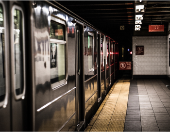
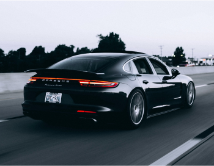

By Subway
The best way is to get to the festival is by subway. Take #7 train to Mets-Willets Point
Station, and transfer to the special event bus. You may also go there by taking #E, F and R
trains. Get off at Jackson Heights/ Roosevelt Avenue, and transfer to the Flushing bound #7
train to Mets-Willets Point Station and take the MTA shuttle bus to the festival.
By Shuttle Bus
There will be special MTA shuttles operating between the Citi Field subway station and
the
Flushing Meadow Park festival site from 8:00 am to 6:00 pm. Look for the station located
right
by the Citi Field subway station (Mets-Willets Point Station) nearby to Citi Field
parking
lots.
Note that the shuttle will not operate until 8 am. Before 8 am, take #7 to the Main Street Flushing station, then transfer to the Q44-SBS (at 39th Ave) or the Q20A (at 41st Ave) towards Jamaica and get out at Main St/Jewel Ave stop. Then walk west towards the park, make a right through the pedestrian entry, stay right and follow the road north towards the festival grounds.
- A MetroCard is required to transfer between the park and the subway station. - When leaving the Park, be sure you have a MetroCard in order to board the bus. - Passengers without a MetroCard must pay full fare on the bus in exact coins. The fare is $2.75 per ride.
Click here for METROCARD information
Click here for subway map
Note that the shuttle will not operate until 8 am. Before 8 am, take #7 to the Main Street Flushing station, then transfer to the Q44-SBS (at 39th Ave) or the Q20A (at 41st Ave) towards Jamaica and get out at Main St/Jewel Ave stop. Then walk west towards the park, make a right through the pedestrian entry, stay right and follow the road north towards the festival grounds.
- A MetroCard is required to transfer between the park and the subway station. - When leaving the Park, be sure you have a MetroCard in order to board the bus. - Passengers without a MetroCard must pay full fare on the bus in exact coins. The fare is $2.75 per ride.
Click here for METROCARD information
Click here for subway map

By Car
This year's parking on-site will be significantly limited. Be sure that you enter via the
Van
Wyck South Service Road entrance. Parking permits are limited, and you can only enter the
park
with special permits.
- Residential parking maybe available (e.g. Park Drive East, Jewel Ave), walk for about 15
minutes
- Cars parked in reserved areas must display parking passes at all times
- Anyone leaving the park must display their pass when re-entering
- Please do not re-distribute and/or make copies of your parking passes
Note: Drop-off and deliveries take place at designated drop-off area only. However, note
that
lines can be long and result in your getting a traffic ticket. Instead, you can drop off
deliveries at the pedestrian entrance on 69th Road between the Van Wyck Expressway and Grand
Central Parkway.